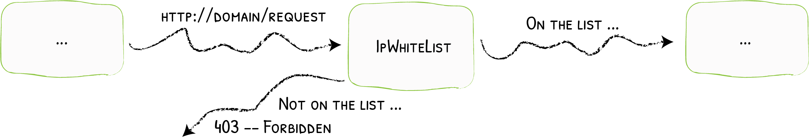

IPWhiteList¶
Limiting Clients to Specific IPs

IPWhitelist accepts / refuses requests based on the client IP.
Configuration Examples¶
# Accepts request from defined IP
labels:
- "traefik.http.middlewares.test-ipwhitelist.ipwhitelist.sourcerange=127.0.0.1/32, 192.168.1.7"apiVersion: traefik.containo.us/v1alpha1
kind: Middleware
metadata:
name: test-ipwhitelist
spec:
ipWhiteList:
sourceRange:
- 127.0.0.1/32
- 192.168.1.7"labels": {
"traefik.http.middlewares.test-ipwhitelist.ipwhitelist.sourcerange": "127.0.0.1/32,192.168.1.7"
}# Accepts request from defined IP
labels:
- "traefik.http.middlewares.test-ipwhitelist.ipwhitelist.sourcerange=127.0.0.1/32, 192.168.1.7"# Accepts request from defined IP
[http.middlewares]
[http.middlewares.test-ipwhitelist.ipWhiteList]
sourceRange = ["127.0.0.1/32", "192.168.1.7"]# Accepts request from defined IP
http:
middlewares:
test-ipwhitelist:
ipWhiteList:
sourceRange:
- "127.0.0.1/32"
- "192.168.1.7"Configuration Options¶
sourceRange¶
The sourceRange option sets the allowed IPs (or ranges of allowed IPs).
ipStrategy¶
The ipStrategy option defines two parameters that sets how Traefik will determine the client IP: depth, and excludedIPs.
ipStrategy.depth¶
The depth option tells Traefik to use the X-Forwarded-For header and take the IP located at the depth position (starting from the right).
Examples of Depth & X-Forwarded-For
If depth was equal to 2, and the request X-Forwarded-For header was "10.0.0.1,11.0.0.1,12.0.0.1,13.0.0.1" then the "real" client IP would be "10.0.0.1" (at depth 4) but the IP used for the whitelisting would be "12.0.0.1" (depth=2).
More examples
X-Forwarded-For |
depth |
clientIP |
|---|---|---|
"10.0.0.1,11.0.0.1,12.0.0.1,13.0.0.1" |
1 |
"13.0.0.1" |
"10.0.0.1,11.0.0.1,12.0.0.1,13.0.0.1" |
3 |
"11.0.0.1" |
"10.0.0.1,11.0.0.1,12.0.0.1,13.0.0.1" |
5 |
"" |
# Whitelisting Based on `X-Forwarded-For` with `depth=2`
labels:
- "traefik.http.middlewares.testIPwhitelist.ipwhitelist.sourcerange=127.0.0.1/32, 192.168.1.7"
- "traefik.http.middlewares.testIPwhitelist.ipwhitelist.ipstrategy.depth=2"# Whitelisting Based on `X-Forwarded-For` with `depth=2`
apiVersion: traefik.containo.us/v1alpha1
kind: Middleware
metadata:
name: testIPwhitelist
spec:
ipWhiteList:
sourceRange:
- 127.0.0.1/32
- 192.168.1.7
ipStrategy:
depth: 2# Whitelisting Based on `X-Forwarded-For` with `depth=2`
labels:
- "traefik.http.middlewares.testIPwhitelist.ipwhitelist.sourcerange=127.0.0.1/32, 192.168.1.7"
- "traefik.http.middlewares.testIPwhitelist.ipwhitelist.ipstrategy.depth=2""labels": {
"traefik.http.middlewares.testIPwhitelist.ipwhitelist.sourcerange": "127.0.0.1/32, 192.168.1.7",
"traefik.http.middlewares.testIPwhitelist.ipwhitelist.ipstrategy.depth": "2"
}# Whitelisting Based on `X-Forwarded-For` with `depth=2`
[http.middlewares]
[http.middlewares.test-ipwhitelist.ipWhiteList]
sourceRange = ["127.0.0.1/32", "192.168.1.7"]
[http.middlewares.test-ipwhitelist.ipWhiteList.ipStrategy]
depth = 2# Whitelisting Based on `X-Forwarded-For` with `depth=2`
http:
middlewares:
test-ipwhitelist:
ipWhiteList:
sourceRange:
- "127.0.0.1/32"
- "192.168.1.7"
ipStrategy:
depth: 2Note
- If
depthis greater than the total number of IPs inX-Forwarded-For, then the client IP will be empty. depthis ignored if its value is is lesser than or equal to 0.
ipStrategy.excludedIPs¶
excludedIPs tells Traefik to scan the X-Forwarded-For header and pick the first IP not in the list.
Examples of ExcludedIPs & X-Forwarded-For
X-Forwarded-For |
excludedIPs |
clientIP |
|---|---|---|
"10.0.0.1,11.0.0.1,12.0.0.1,13.0.0.1" |
"12.0.0.1,13.0.0.1" |
"11.0.0.1" |
"10.0.0.1,11.0.0.1,12.0.0.1,13.0.0.1" |
"15.0.0.1,13.0.0.1" |
"12.0.0.1" |
"10.0.0.1,11.0.0.1,12.0.0.1,13.0.0.1" |
"10.0.0.1,13.0.0.1" |
"12.0.0.1" |
"10.0.0.1,11.0.0.1,12.0.0.1,13.0.0.1" |
"15.0.0.1,16.0.0.1" |
"13.0.0.1" |
"10.0.0.1,11.0.0.1" |
"10.0.0.1,11.0.0.1" |
"" |
Important
If depth is specified, excludedIPs is ignored.
# Exclude from `X-Forwarded-For`
labels:
- "traefik.http.middlewares.test-ipwhitelist.ipwhitelist.ipstrategy.excludedips=127.0.0.1/32, 192.168.1.7"# Exclude from `X-Forwarded-For`
apiVersion: traefik.containo.us/v1alpha1
kind: Middleware
metadata:
name: test-ipwhitelist
spec:
ipWhiteList:
ipStrategy:
excludedIPs:
- 127.0.0.1/32
- 192.168.1.7# Exclude from `X-Forwarded-For`
labels:
- "traefik.http.middlewares.test-ipwhitelist.ipwhitelist.ipstrategy.excludedips=127.0.0.1/32, 192.168.1.7""labels": {
"traefik.http.middlewares.test-ipwhitelist.ipwhitelist.ipstrategy.excludedips": "127.0.0.1/32, 192.168.1.7"
}# Exclude from `X-Forwarded-For`
[http.middlewares]
[http.middlewares.test-ipwhitelist.ipWhiteList]
[http.middlewares.test-ipwhitelist.ipWhiteList.ipStrategy]
excludedIPs = ["127.0.0.1/32", "192.168.1.7"]# Exclude from `X-Forwarded-For`
http:
middlewares:
test-ipwhitelist:
ipWhiteList:
ipStrategy:
excludedIPs:
- "127.0.0.1/32"
- "192.168.1.7"